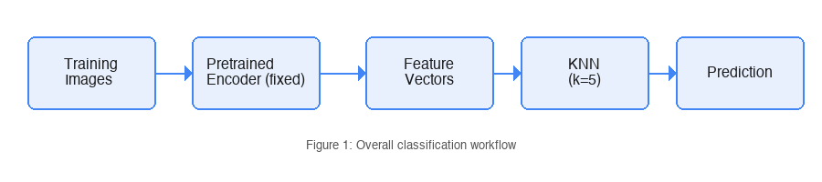
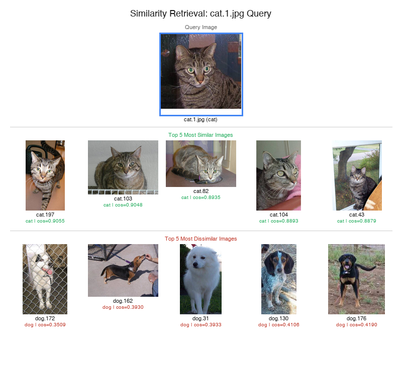
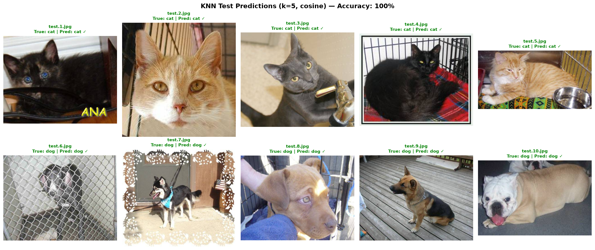
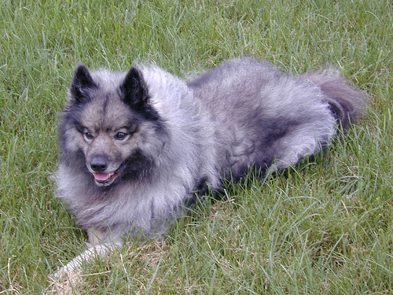
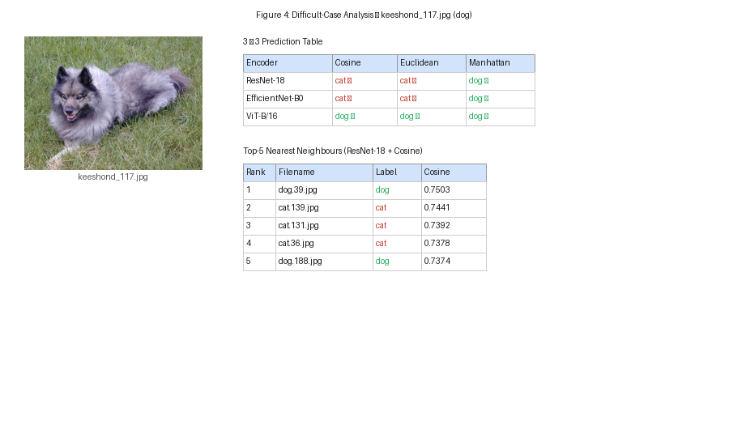

1. Objective
The assignment explores cat/dog image classification using pretrained encoders as fixed feature extractors and KNN as the downstream classifier. It compares three pretrained encoders and three distance measures to examine how representation and distance choice affect classification results.
2. Dataset
Main Dataset
Sourced from the Dogs vs Cats subset on Zenodo.
- Training set: 400 images — 200 cats and 200 dogs
- Test set: 10 unseen images — 5 cats and 5 dogs
Stress-Test Dataset
An additional 100 images from the Oxford-IIIT Pet Dataset, covering 37 distinct breeds (12 cat breeds, 25 dog breeds). 50 cats and 50 dogs, with 2–5 images per breed.
3. Methodology

Pretrained Encoder -> Feature Vectors -> KNN -> Prediction">Pretrained Encoders as Fixed Feature Extractors
Each image was passed through a pretrained model with the final classification layer removed. The remaining layers acted as a fixed feature extractor, converting each image into a high-dimensional feature vector. No weights were updated.
KNN Classifier
KNN is a lazy learner: it builds no mathematical model during training; it simply memorizes the dataset and defers all computation to prediction time. The k = 5 nearest neighbours were identified using the selected distance measure, and the final prediction was determined by majority vote.
| Encoder | Architecture | Feature Dimension |
|---|---|---|
| ResNet-18 | CNN | 512 |
| EfficientNet-B0 | CNN | 1280 |
| ViT-B/16 | Vision Transformer | 768 |
| Measure | Definition |
|---|---|
| Cosine Similarity | Measures directional alignment, ignoring magnitude |
| Euclidean Distance | Straight-line geometric distance (L2 norm) |
| Manhattan Distance | Sum of absolute coordinate differences (L1 norm) |
4. Similarity Retrieval
Using cat.1.jpg as the query, cosine similarity was computed
against all 399 other training images. The top-5 most similar images were
all cats; the top-5 most dissimilar were all dogs.

5. Predictions on 10 Unseen Images
The KNN classifier (ResNet-18, cosine, k=5) was applied to the 10 unseen test images. All 10 were correctly classified.
5-fold CV accuracy: 98.25% ± 1.00% (ResNet-18 + cosine similarity + k = 5).

6. Encoder × Distance Comparison
All nine combinations were evaluated using 5-fold cross-validation on the 400 training images. All nine achieved 100% on the 10-image test set.
| Encoder | Cosine | Euclidean | Manhattan |
|---|---|---|---|
| ResNet-18 | 98.25 | 98.25 | 98.50 |
| EfficientNet-B0 | 98.25 | 98.25 | 98.75 |
| ViT-B/16 | 99.25 | 99.25 | 99.25 |
Key observations: Cosine and Euclidean produced identical results on normalized vectors. Manhattan distance produced different nearest-neighbour rankings, yielding small accuracy improvements for ResNet-18 (+0.25%) and EfficientNet-B0 (+0.50%). ViT-B/16 achieved the highest CV accuracy (99.25%) across all three measures.
7. Stress Test (100 Images, 37 Breeds)
The 100-image stress-test set was evaluated using ResNet-18 with cosine similarity and k = 5 only.
Overall accuracy: 99 / 100 = 99.00%
- Cat images: 50/50 correctly classified (100%)
- Dog images: 49/50 correctly classified (98%)
- Keeshond: 50% (1/2 correct) — all other breeds: 100%
The single misclassification was keeshond_117.jpg (a Keeshond dog),
classified as cat. This case is analysed below.
Note: The stress test was run with only one encoder–distance combination. No comparisons across encoders or distances are possible on this set.
8. Difficult Case: keeshond_117.jpg

3 × 3 Prediction Table
The image was tested with all nine encoder–distance combinations.
| Encoder | Cosine | Euclidean | Manhattan |
|---|---|---|---|
| ResNet-18 | cat ✗ | cat ✗ | dog ✓ |
| EfficientNet-B0 | cat ✗ | cat ✗ | dog ✓ |
| ViT-B/16 | dog ✓ | dog ✓ | dog ✓ |
Top-5 Nearest Neighbours (ResNet-18 + Cosine)
| Rank | Filename | Label | Cosine |
|---|---|---|---|
| 1 | dog.39.jpg | dog | 0.7503 |
| 2 | cat.139.jpg | cat | 0.7441 |
| 3 | cat.131.jpg | cat | 0.7392 |
| 4 | cat.36.jpg | cat | 0.7378 |
| 5 | dog.188.jpg | dog | 0.7374 |
With cosine similarity, three of the five nearest neighbours were cats, resulting in a misclassification. Changing the distance measure to Manhattan shifted the nearest neighbours, and the prediction changed to dog. ViT-B/16 features correctly classified the image with all three distance measures. This single case illustrates that both the encoder (feature space) and the distance measure can affect KNN predictions, but this observation is based on one image and should not be generalised.

9. Limitations
- The 10-image test set is too small to draw statistically meaningful conclusions. All nine combinations achieved 100%.
- The 100-image stress test was run with only one encoder–distance combination (ResNet-18 + Cosine).
keeshond_117.jpgis a single example; the observed pattern should not be generalised.- CV accuracy differences between distance measures were small and within the standard deviation.
- No runtime or efficiency measurements were performed.
10. Conclusion
In the experiment, pretrained models provided effective feature representations for KNN-based cat/dog classification with the 400-image training set. ViT-B/16 achieved the highest CV accuracy (99.25%). Cosine and Euclidean distance produced identical results on normalized features; Manhattan distance produced different rankings that affected predictions on a single edge case. Stronger conclusions would require larger and more diverse evaluation sets.